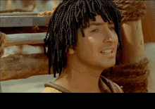

Jak to jest być skrybą, dobrze?
A, wie pan, moim zdaniem to nie ma tak, że dobrze, albo że niedobrze. Gdybym miał powiedzieć, co cenię w życiu najbardziej, powiedziałbym, że ludzi. Ludzi, którzy podali mi pomocną dłoń, kiedy sobie nie radziłem, kiedy byłem sam, i co ciekawe, to właśnie przypadkowe spotkania wpływają na nasze życie. Chodzi o to, że kiedy wyznaje się pewne wartości, nawet pozornie uniwersalne, bywa, że nie znajduje się zrozumienia, które by tak rzec, które pomaga się nam rozwijać. Ja miałem szczęście, by tak rzec, ponieważ je znalazłem, i dziękuję życiu! Dziękuję mu; życie to śpiew, życie to taniec, życie to miłość! Wielu ludzi pyta mnie o to samo: ale jak ty to robisz, skąd czerpiesz tę radość? A ja odpowiadam, że to proste! To umiłowanie życia. To właśnie ono sprawia, że dzisiaj na przykład buduję maszyny, a jutro – kto wie? Dlaczego by nie – oddam się pracy społecznej i będę, ot, choćby, sadzić... doć— m-marchew...
